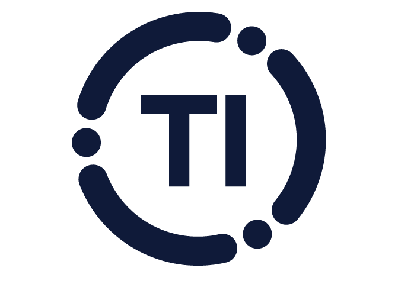

Marketing-supplied brand assets · ring + TI letters as separate PNGs from Peter. Ring rotates slowly around the static TI letters. Font and weight preserved exactly as marketing intended.
Left: shipped PNG, static. Right: ring rotates as a rigid unit. TI letters stay still and use Peter's exact brand typography. 22s per full revolution. Dot-and-arc geometry is the marketing-approved version from the assets Peter sent over.
Three production sizes: 120px (briefing card), 64px (mid), 32px (nav). Ring rotation runs the same at every size. Reduced-motion users see a static mark.
| State | 120px | 64px | 32px |
|---|---|---|---|
| Today on dev |  |
||
| Proposed |
|
|
|
Two real PNG assets from marketing (Peter): ti-ring.png (the orbital ring) and ti-letters.png (the TI wordmark). Ring rotates as a single rigid image. Letters stay still. No SVG, no font dependency.
<div className="ti-mark">
<img className="ti-ring" src="/images/ti-ring.png" alt="" />
<img className="ti-letters" src="/images/ti-letters.png" alt="TI" />
</div>
.ti-mark {
position: relative;
width: 120px; /* scales cleanly to any size */
height: 120px;
}
.ti-mark .ti-ring {
position: absolute;
inset: 0;
width: 100%;
height: 100%;
animation: ringSpin 22s linear infinite;
will-change: transform;
}
.ti-mark .ti-letters {
position: absolute;
top: 50%; left: 50%;
transform: translate(-50%, -50%);
width: 38%;
height: auto;
}
@keyframes ringSpin {
from { transform: rotate(0deg); }
to { transform: rotate(360deg); }
}
@media (prefers-reduced-motion: reduce) {
.ti-mark .ti-ring { animation: none !important; }
}